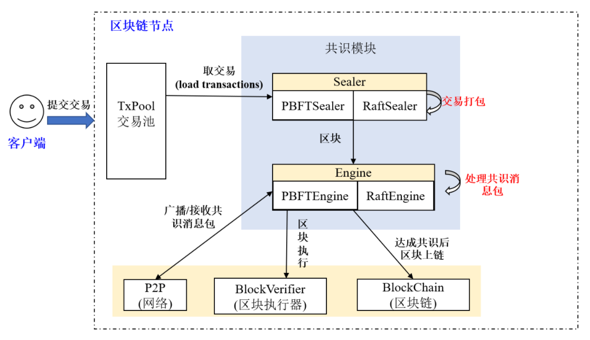
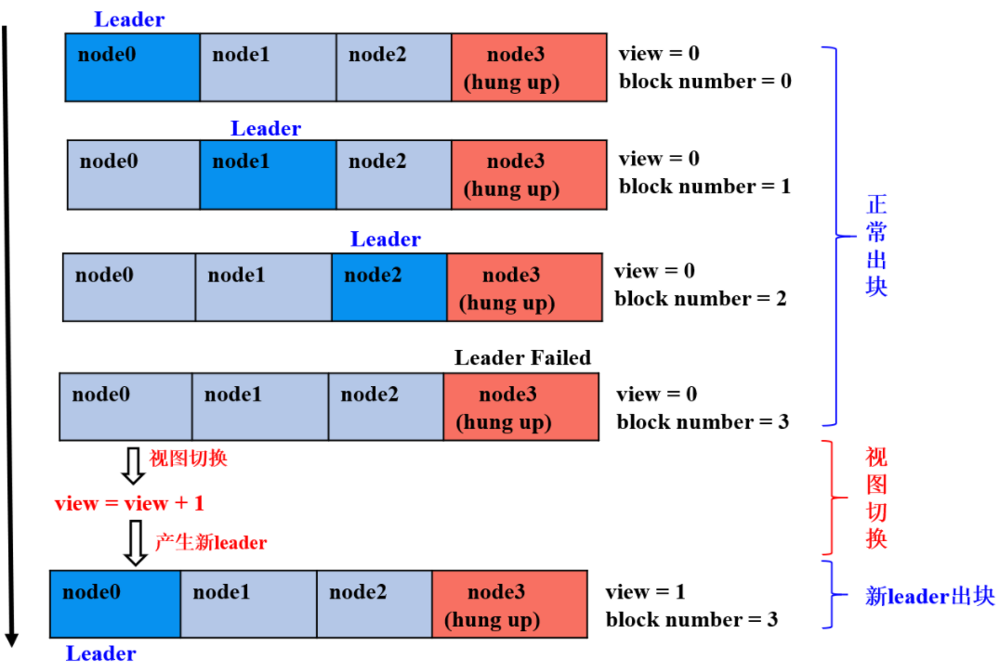
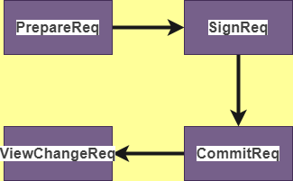
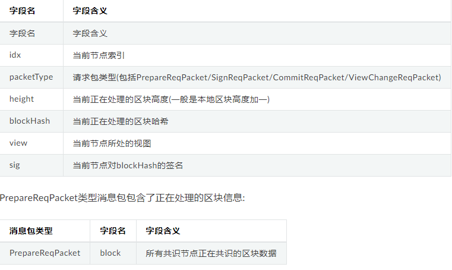
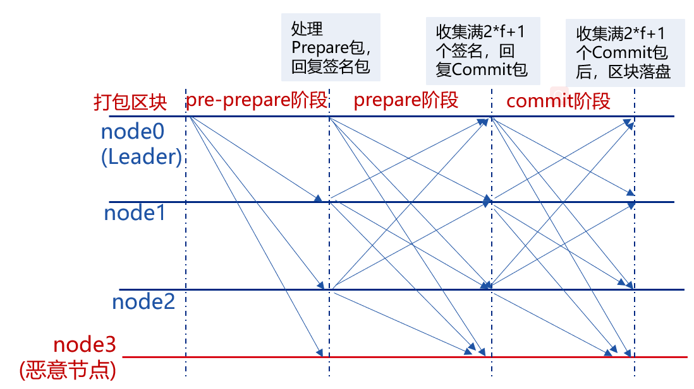
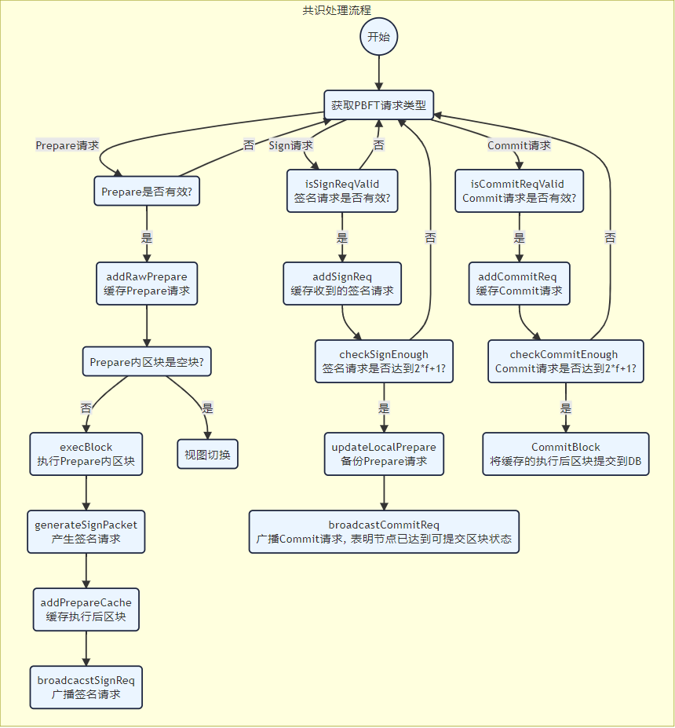
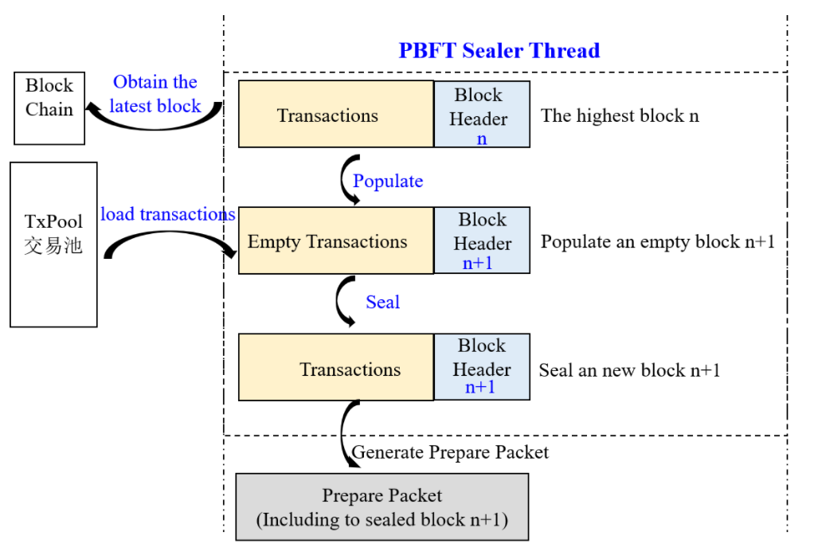

FISCO-7-核心模块设计解析-共识算法
共识算法
区块链系统通过共识算法保障系统一致性。 理论上，共识是对某个提案(proposal)达成一致意见的过程，分布式系统中提案的含义十分宽泛，包括事件发生顺序、谁是leader等。区块链系统中，共识是各个共识节点对交易执行结果达成一致的过程。
0 拜占庭将军问题
拜占庭将军为题(Byzantine Generals Problem)是由莱斯利.兰波特在其同名论文总提出的分布式对等网络 通信容错问题
在分布式计算中，不同的计算机通过通讯交换信息达成共识而按照同一套协作策略行动。但有时候，系统中的成员计算机可能出错而发送错误的消息，用于传递信息的通讯网络也可能导致信息损坏，使得网络中不同的成员关于全体协作的策略得出不同结论，从而破坏系统一致性。
拜占庭将军问题被认为是容错性问题中最难的问题类型之一。
1 问题描述
一组拜占庭将军分别各率领一支军队共同围困一座城市。为了简化问题，将各支军队的行动策略限定为进攻或撤离两种。因为部分军队进攻部分军队撤离可能会造成灾难性后果，因此各位将军必须通过投票来达成一致策略，即所有军队一起进攻或所有军队一起撤离。因为各位将军分处城市不同方向，他们只能通过信使互相联系。在投票过程中每位将军都将自己投票给进攻还是撤退的信息通过信使分别通知其他所有将军，这样一来每位将军根据自己的投票和其他所有将军送来的信息就可以知道共同的投票结果而决定行动策略。
系统的问题在于，可能将军中出现叛徒，他们不仅可能向较为糟糕的策略投票，还可能选择性地发送投票信息。假设有9位将军投票，其中1名叛徒。8名忠诚的将军中出现了4人投进攻，4人投撤离的情况。这时候叛徒可能故意给4名投进攻的将领送信表示投票进攻，而给4名投撤离的将领送信表示投撤离。这样一来在4名投进攻的将领看来，投票结果是5人投进攻，从而发起进攻；而在4名投撤离的将军看来则是5人投撤离。这样各支军队的一致协同就遭到了破坏。
由于将军之间需要通过信使通讯，叛变将军可能通过伪造信件来以其他将军的身份发送假投票。 而即使在保证所有将军忠诚的情况下，也不能排除信任被人截杀，甚至被敌人间谍替换等情况。因此很难通过保证人员可靠性及通讯可靠性来解决问题。
假使那些忠诚（或是没有出错）的将军仍然能通过多数决定来决定他们的战略，便称达到了拜占庭容错（多数决定即拜占庭容错）。在此，票都会有一个默认值，若消息（票）没有被收到，则使用此默认值来投票。
上述那些问题映射到计算机系统里，将军便成了计算机，而信差就是通信系统。 在分布式对等网络中需要按照共同一致策略协作的成员计算机即为问题中的将军，而各成员计算机赖以进行通讯的网络链路即为信使。拜占庭将军问题描述的就是某些成员计算机或网络链路出现错误、甚至被蓄意破坏者控制的情况。
在点对点式数字货币系统比特币里，比特币网络的运作是平行的（parallel）。各节点与终端都运算著区块链来达成工作量证明（PoW）。工作量证明的链接是解决比特币系统中拜占庭问题的关键，避免有问题的节点（即前文提到的“反叛的将军”）破坏数字货币系统里交易帐的正确性，是对整个系统的运行状态有着重要的意义。
共识算法分类
根据是否容忍拜占庭错误，共识算法可以分为容错(Crash Fault Tolerance, CFT)类算法和拜占庭容错(Byzantine Fault Tolerance,BFT)类算法:
CFT类算法: 普通容错类算法，当系统出现网络、磁盘故障，服务器宕机等普通故障时，仍能针对某个提议达成共识，经典的算法包括Paxos、Raft等，这类算法性能较好、处理速度快、可以容忍不超过一半的故障节点。 https://raft.github.io/
BFT算法: 拜占庭容错类算法，除了容忍系统共识过程中出现的普通故障外，还可以容忍部分节点故意欺骗(如伪造交易执行结果)等拜占庭错误，经典算法包括PBFT算法，这类算法性能较差，能容忍不超过三分之一的故障节点。
FISCO BCOS共识算法
FISCO BCOS基于多群组架构实现了插件化的共识算法，不同群组可以运行不同的共识算法，组与组之间的共识过程互不影响，FISCO BCOS目前支持PBFT和RAFT两种共识算法:
- PBFT共识算法: BFT类算法，可容忍不超过三分之一的故障节点和作恶节点，可达到最终一致性；
- Raft共识算法: CFT类算法, 可容忍一半故障节点，不能防止节点作恶，可达到一致性。
框架
FISCO BCOS实现了一套可以扩展的共识框架，可插件化扩展不同的共识算法，目前支持PBFT和Raft算法。

TxPool交易池: 负责存储客户端提交的交易
共识模块:
Sealer: 从TxPool取交易，基于最高节点打包交易，产生新区块，新区块交给Engine线程处理。PBFT和Raft的交易打包线程分别为PBFTSealer和RaftSealer
Engine: 共识线程，负责从本地或者网络接收新区块，并根据接收到的共识消息完成共识流程，最终将达成共识的新区块写入区块链，区块上链后，从TXxpool中删除已经上链的交易。
PBFT基础流程
PBFT(Practical Byzantine Fault Tolerance)共识算法可以在少数节点作恶(如伪造消息)场景中达成共识，它采用签名、签名验证、哈希等密码学算法确保消息传递过程中的防篡改性、防伪造性、不可抵赖性，并优化了前人工作，将拜占庭容错算法复杂度从指数级降低到多项式级别，在一个由(3f+1)个节点构成的系统中，只要有不少于(2f+1)个非恶意节点正常工作，该系统就能达成一致性，如：7个节点的系统中允许2个节点出现拜占庭错误。
1 重要概念
节点类型，节点ID，节点索引和视图是PBFT共识算法的关键概念。
1.1 节点类型
- Leader/Primary: 共识节点，负责将交易打包成区块和区块共识，每轮共识过程中有且仅有一个leader，为了防止leader伪造区块，每轮PBFT共识后，均会切换leader；
- Replica: 副本节点，负责区块共识，每轮共识过程中有多个Replica节点，每个Replica节点的处理过程类似；
- Observer: 观察者节点，负责从共识节点或副本节点获取最新区块，执行并验证区块执行结果后，将产生的区块上链。
其中Leader和Replica统称为共识节点。
1.2 节点ID和节点索引
为了防止节点作恶，PBFT共识过程中每个共识节点均对其发送的消息进行签名，对收到的消息包进行验签名，因此每个节点均维护一份公私钥对，私钥用于对发送的消息进行签名，公钥作为节点ID，用于标识和验签。
节点签名和验签
节点ID: 共识节点签名公钥和共识节点唯一标识，一般是64字节二进制串，其他节点使用消息包发送者的节点ID对消息包进行验签
考虑到节点ID很长，在共识消息中包含该字段会耗费部分网络带宽，FISCO BCOS引入了节点索引，每个共识节点维护一份公共的共识节点列表，节点索引记录了每个共识节点ID在这个列表中的位置，发送网络消息包时，只需要带上节点索引，其他节点即可以从公共的共识节点列表中索引出节点的ID，进而对消息进行验签:
节点索引 : 每个共识节点ID在这个公共节点ID列表中的位置
1.3 视图View
PBFT共识算法使用视图view记录每个节点的共识状态，相同视图节点维护相同的Leader和Replicas节点列表。 当Leader出现故障时，会发生视图切换，若视图切换成功(至少2f+1个相同节点达到相同视图)，则根据新的视图选出新的leader，新leader开始出块，否则继续进行视图切换，直至全网大部分节点(大于2f+1)达到一致视图。
FISCO BCOS系统中，leader索引的计算公式如下：leader_idx = (view + block_number) % node_num
下图简单展示了4(3*f+1, f=1)节点FISCO BCOS系统中，第三个节点(node3)为拜占庭节点情况下，视图切换过程：

- 前三轮共识： node0、node1、node2为leader，且非恶意节点数目等于2*f+1，节点正常出块共识；
- 第四轮共识：node3为leader，但node3为拜占庭节点，node0-node2在给定时间内未收到node3打包的区块，触发视图切换，试图切换到view_new=view+1的新视图，并相互间广播viewchange包，节点收集满在视图view_new上的(2*f+1)个viewchange包后，将自己的view切换为view_new，并计算出新leader；
- 为第五轮共识：node0为leader，继续打包出块。
1.4 共识消息
PBFT模块主要包括PrepareReq、SignReq、CommitReq和ViewChangeReq四种共识消息：

- PrepareReqPacket: 包含区块的请求包，由leader产生并向所有的replica节点广播，replica节点收到prepare包后，验证PrepareReq签名，执行区块并缓存区块执行结果，达到防止拜占庭节点作恶，保证区块执行结果的最终确定性的目的。
- SignReqPacket: 带有区块执行结果的签名请求，由收到Prepare包并执行完区块的共识节点产生，SignReq请求带有执行后区块的hash以及该hash的签名，分别记为SignReq.block_hash 和 SignReq.sig,节点将SignReq广播到所有其他共识节点后，其他节点对SignReq(即区块执行结果)进行共识；
- CommitReqPacket: 用于确认区块执行结果的提交请求，由收集满(2f+1)个block_hash相同且来自不同节点SignReq请求的节点产生，CommitReq被广播给所有其他共识节点，其他节点收集满(2f+1)个block_hash相同、来自不同节点的CommitReq后，将本地节点缓存的最新区块上链。
- ViewChangeReqPacket: 视图切换请求，当leader无法提供正常服务（如网络连接不正常，服务器宕机等）时，其他共识节点会主动触发视图切换，ViewChangeReq中带有该节点即将切换到的视图(记为toView，当前视图加1)，某节点收集满2*f+1个视图等于toView，来自不同节点的ViewChangeReq后，会将当前视图切换为toView.

2 系统架构

PBFT共识主要包括两个线程:
- PBFTSealer: PBFT打包线程，负责从交易池取交易，并将打包好的区块封装成PBFT Prepare包，交给PBFTEngine处理；
- PBFTEngine: PBFT共识线程，从PBFTSealer或者P2P网络接收PBFT共识消息包，区块验证器(Blockverifier)负责开始执行区块，完成共识流程，将达成共识的区块写入区块链，区块上链后，从交易池中删除已经上链的交易。
3 核心流程
PBFT共识主要包括Pre-prepare、Prepare和Commit三个阶段：
- Pre-prepare：负责执行区块，产生签名包，并将签名包广播给所有共识节点；
- Prepare：负责收集签名包，某节点收集满2*f+1的签名包后，表明自身达到可以提交区块的状态，开始广播Commit包；
- Commit：负责收集Commit包，某节点收集满2*f+1的Commit包后，直接将本地缓存的最新区块提交到数据库。


3.1 leader打包区块
PBFT共识算法中，共识节点轮流出块，每一轮共识仅有一个leader打包区块，leader索引通过公式(block_number + current_view) % consensus_node_num计算得出。
block_number=10, current_view=2 ,共识节点3， (10+2)%3 =0,leader是节点0
节点计算当前leader索引与自己索引相同后，就开始打包区块。区块打包主要由PBFTSealer线程完成，Sealer线程的主要工作如下图所示：

- 产生新的区块: 通过区块链获取当前最高块，并给予最高块产生新区块(将新区块父哈希设置为最高块哈希，时间戳为当前时间，交易清空)
- 从交易池打包交易: 产生新空块后，从交易池中获取交易，并将获取的交易插入到产生的新区块中
- 组装新区块: Sealer线程打包到交易后，将新区块的打包者(sealer字段)设置为自己的索引，并根据打包的交易计算出所有交易的transactionRoot；
- 产生Prepare包： 将组装的新区块编码到Prepare包内，通过PBFTEngine线程广播给组内所有共识节点，其他共识节点收到Prepare包后，开始进行三阶段共识。
3.2 pre-prepare阶段
共识节点收到Prepare包后，进入pre-prepare阶段，此阶段的主要工作流程包括:
- Prepare包合法性判断: 主要判断是否是重复的Prepare包、Prepare请求中包含的区块父哈希是否是当期节点的最高块哈希(防止分叉)，Prepare请求中包含区块的块高是否等于最高块高加1；
- 缓存合法的Prepare包: 若Prepare请求合法，则将其缓存到本地，用于过滤重复的Prepare请求、
- 空块判断: 若Prepare请求包含的区块中交易数目是0，则触发空块视图切换，将当前视图加1，并向所有其他节点广播视图切换请求
- 执行区块并缓存区块执行结果: 若Prepare请求包含的区块中交易数目大于0，则调用BlockVerifier区块执行器执行区块，并缓存执行后的区块
- 产生并广播签名包: 基于执行后的区块哈希，产生并广播签名包，表明本节点已经完成区块执行和验证。
3.3 Prepare阶段
共识节点收到签名包后，进入Prepare阶段，此阶段的主要工作流程包括：
签名包合法性判断: 主要判断签名包的哈希与Pre-prepare阶段缓存的执行后的区块哈希相同，若不相同，则继续判断该请求是否属于未来块签名请求(产生未来块的原因是本节点处理性能低于其他节点，还在进行上一轮共识，判断未来块的条件是: 签名包的height字段大于本地块高最高快加1)，若请求也非未来块，则是非法的签名请求，节点直接拒绝该签名请求。
缓存合法的签名包：节点会缓存合法的签名包；
判断pre-prepare阶段缓存的区块对应的签名包缓存是否达到2f+1，若收集满签名包，广播Commit包：若pre-prepare阶段缓存的区块哈希对应的签名包数目超过2f+1，则说明大多数节点均执行了该区块，并且执行结果一致，说明本节点已经达到可以提交区块的状态，开始广播Commit包；
若收集满签名包，备份pre-prepare阶段缓存的Prepare包落盘：为了防止Commit阶段区块未提交到数据库之前超过2*f+1个节点宕机，这些节点启动后重新出块，导致区块链分叉(剩余的节点最新区块与这些节点最高区块不同)，还需要备份pre-prepare阶段缓存的Prepare包到数据库，节点重启后，优先处理备份的Prepare包。
3.4 Commit阶段
共识节点收到Commit包后，进入Commit阶段，此阶段工作流程包括：
- Commit包合法性判断：主要判断Commit包的哈希与pre-prepare阶段缓存的执行后的区块哈希相同，若不相同，则继续判断该请求是否属于未来块Commit请求(产生未来块的原因是本节点处理性能低于其他节点，还在进行上一轮共识，判断未来块的条件是：Commit的height字段大于本地最高块高加一)，若请求也非未来块，则是非法的Commit请求，节点直接拒绝该请求；
- 缓存合法的Commit包：节点缓存合法的Commit包；
- 判断pre-prepare阶段缓存的区块对应的Commit包缓存是否达到2f+1，若收集满Commit包，则将新区块落盘：若pre-prepare阶段缓存的区块哈希对应的Commit请求数目超过2f+1，则说明大多数节点达到了可提交该区块状态，且执行结果一致，则调用BlockChain模块将pre-prepare阶段缓存的区块写入数据库；
3.5 视图切换处理流程
当PBFT三阶段共识超时或节点收到空块时，PBFTEngine会试图切换到更高的视图(将要切换到的视图toView加一)，并触发ViewChange处理流程；节点收到ViewChange包时，也会触发ViewChange处理流程：
- 判断ViewChange包是否有效: 有效的ViewChange请求中带有的块高值必须不小于当前节点最高块高，视图必须大于当前节点视图；
- 缓存有效ViewChange包： 防止相同的ViewChange请求被处理多次，也作为判断节点是否可以切换视图的统计依据；
- 收集ViewChange包：若收到的ViewChange包中附带的view等于本节点的即将切换到的视图toView且本节点收集满2*f+1来自不同节点view等于toView的ViewChange包，则说明超过三分之二的节点要切换到toView视图，切换当前视图到toView。
本博客所有文章除特别声明外，均采用 CC BY-SA 4.0 协议 ，转载请注明出处！